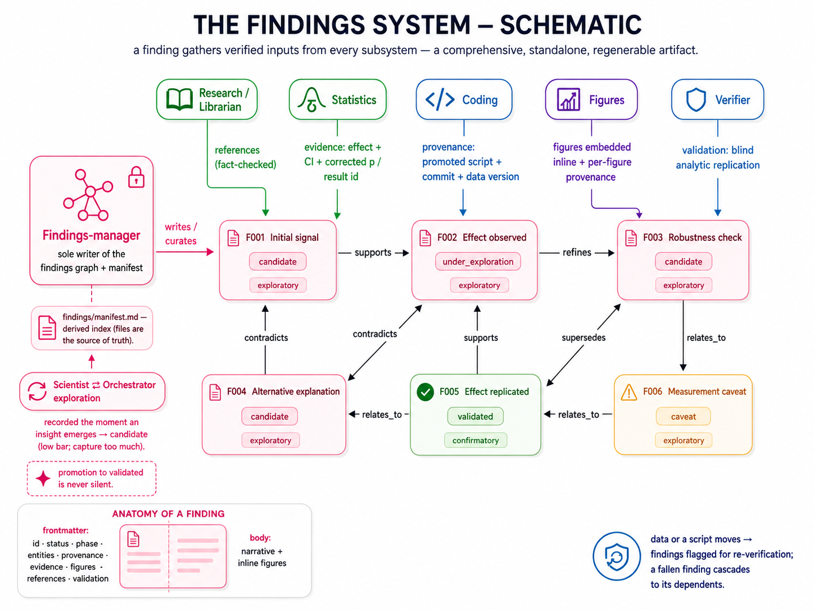

The durable output
The findings system
The workflow's real deliverable: a curated graph of findings, each one gathering verified evidence, provenance, figures, and validation from every subsystem.

The workflow's real deliverable: a curated graph of findings, each one gathering verified evidence, provenance, figures, and validation from every subsystem.
